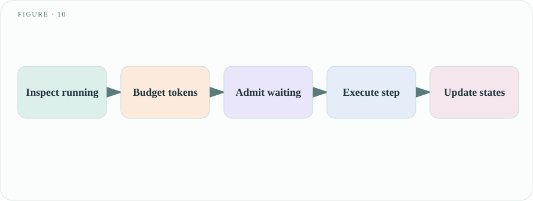

当一个请求到达 vLLM 服务时，它不会立刻上 GPU。它先进入等待队列，由调度器决定什么时候让它"上场"。调度器的质量直接决定了——用户等多久、GPU 用多满、长请求会不会霸占所有资源。

INTERACTIVE LAB
观察一次调度迭代
请求完成后释放资源，等待队列中的新请求才有机会进入后续迭代；真实调度还会受 token budget 和 KV Cache 容量约束。
Running: A · B · C | Waiting: D · E
当前轮次 0：A、B、C 正在运行。
10.1 调度器的角色
调度器（Scheduler）是 vLLM 的"交通指挥中心"。每步迭代它要做三个决策：
每步调度循环：
1. 哪些请求该"下场"了？（检测完成/超时请求，释放资源）
2. 哪些请求可以"上场"？（从等待队列选请求，分配 KV Cache Block）
3. 怎么组这一轮的 batch？（prefill/decode 混合，batch size 决定）
约束条件：
- Block 够不够？（显存约束）
- 这轮 batch 的总 token 会不会太多？（计算约束）
- 优先级规则是什么？（公平性约束）10.2 三种调度策略
| 策略 | 规则 | 优点 | 缺点 | 适用场景 |
|---|---|---|---|---|
| FCFS (先来先服务) | 按到达时间排队 | 公平，实现简单 | 长请求阻塞短请求 | 通用，默认推荐 |
| Priority (优先级) | 高优先级请求插队 | SLA 可控 | 低优先级可能饿死 | 多租户，VIP 用户 |
| Preemption (抢占) | 高优请求可中断低优请求 | 保证紧急请求低延迟 | 被抢占请求浪费已做的工作 | 实时交互+批量任务混合 |
10.3 FCFS 的实际表现
FCFS 看起来"公平"，但在 LLM 推理中有个致命问题：
假设先到 3 个短请求，后到 1 个长请求：
✅ 短请求 A/B/C 很快完成 → GPU 效率高
假设先到 1 个长请求（8000 token 输出），后到 10 个短请求：
❌ 长请求霸占资源 30 秒 → 10 个短请求全在排队 → P99 延迟爆炸
这就是所谓的 "Hogging 问题"（长请求霸占资源）生产建议：如果你的服务混合了长短请求，推荐用 Priority 策略。给短请求（实时对话）设高优先级，给长请求（文章生成）设低优先级。这样短请求的 P99 延迟能控制住。
10.4 统一调度器：Prefill + Decode 一起管
V1 的调度器不再区分"prefill 调度器"和"decode 调度器"，而是统一管理所有请求。这解决了 V0 的一个长期问题：
V0 问题:
prefill_scheduler: "我有 3 个请求要做 prefill，每个需要 5 个 block"
decode_scheduler: "我有 10 个请求在做 decode，占着 200 个 block"
两个调度器互相看不到对方的决策，导致资源争抢
V1 解法:
unified_scheduler: "总共 215 个 block，prefill 需要 15 个，decode 需要 200 个。还剩 30 个，可以再放入 2 个短请求的 prefill"
统一视图，统一决策10.5 调度参数调优
vllm serve model \
--scheduling-policy fcfs \ # 或 priority
--max-num-seqs 128 \ # 最大并发序列
--max-num-batched-tokens 8192 # 每 batch 最大 token 数
# max-num-seqs: 限制同时"在场"的请求数。太小→GPU闲。太大→KV Cache不够
# max-num-batched-tokens: 限制一轮 batch 的总 token 数，控制计算量
# 调优思路：
# 1. 设置 max-num-seqs 到一个偏大的值（如 256）
# 2. 观察 free_blocks 指标
# 3. 如果 free_blocks 经常 < 100 → 降低 max-num-seqs
# 4. 如果 GPU 利用率 < 70% → 提高 max-num-seqs（如果 free_blocks 还够）常见错误：很多人把 max-num-seqs 设得特别大（1000+）以为能提高吞吐。实际上 vLLM 的调度器会自动限制并发——KV cache 不够时请求自然进不了 batch。这个参数只是个硬上限，设太大没有额外好处，反而可能导致显存压力下不必要的抢占。
调度策略没有银弹，要结合你的业务特征。下一章咱们深入 Chunked Prefill——vLLM 处理长 prompt 的独门武器。
参考资料与证据
- vLLM V1 指南Unified scheduler
- vLLM Scheduler 配置Scheduling policy；token budgets